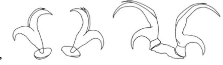
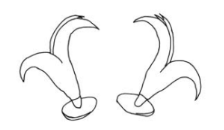
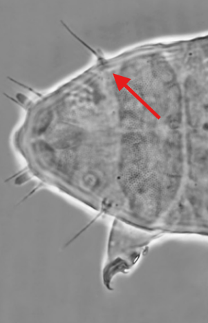
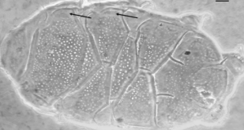
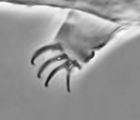
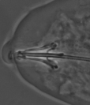

Use a chave dicotômica interativa para identificar tardígrados
Chave Dicotômica
Identifique seu espécime passo a passo
Cadastrar Achados
Contribua para o banco de dados
Guia de Estruturas
Glossário visual da anatomia
Como Coletar
Manuais e dicas para coleta
Como Fotografar
Dicas para fotos em microscópio
Anatomia
Manuais de anatomia detalhada
Como Usar
Chave Dicotômica: Ferramenta científica que
utiliza perguntas com duas alternativas para identificar
organismos. Leia cada pergunta cuidadosamente, observe as
características do seu espécime e escolha a opção que melhor se
adequa. O sistema irá guiá-lo até a identificação correta!
Filo Tardigrada: Classes
Histórico de Escolhas
Suas escolhas aparecerão aqui durante a identificação.
Guia de Estruturas Morfológicas
🦵
Garras
As garras podem ser em formato Y, L ou V. Observe o número (2-4 por perna) e a forma de inserção na perna.
'"
/>
Garras
As garras podem ser em formato Y, L ou V. Observe o número
(2-4 por perna) e a forma de inserção na perna.
🔬
Macroplacóides
Estruturas na faringe. Conte quantos há (2 ou 3) e observe a forma (haste ou gota) e presença de septo.
'"
/>
Macroplacóides
Estruturas na faringe. Conte quantos há (2 ou 3) e observe a
forma (haste ou gota) e presença de septo.
🎯
Cirros Laterais
Apêndices sensoriais na cabeça. Presente em Heterotardigrada, ausente em Eutardigrada.
'"
/>
Cirros Laterais
Apêndices sensoriais na cabeça. Presente em Heterotardigrada,
ausente em Eutardigrada.
🛡️
Placas Dorsais
Estruturas de proteção. Observe se há placa pseudosegmentar e se a placa terminal é entalhada ou dividida.
'"
/>
Placas Dorsais
Estruturas de proteção. Observe se há placa pseudosegmentar e
se a placa terminal é entalhada ou dividida.
👄
Estiletes Bucais
Estruturas perfurantes na boca. Presentes em Parachela, ausentes em Apochela.
'"
/>
Estiletes Bucais
Estruturas perfurantes na boca. Presentes em Parachela,
ausentes em Apochela.
🔵
Lúnulas
Estruturas cuticulares em forma de lua crescente, geralmente nas garras.
'"
/>
Lúnulas
Estruturas cuticulares em forma de lua crescente, geralmente
nas garras.
Como Coletar Tardígrados
1
Escolha o Substrato
Musgos, líquens, folhiço úmido, sedimentos de água doce.
Tardígrados vivem em ambientes úmidos.
2
Colete a Amostra
Use pinças ou retire com as mãos. Coloque em saco plástico ou
envelope de papel. Anote local, data e tipo de substrato.
3
Hidrate o Material
Em laboratório, coloque a amostra em recipiente com água
destilada ou filtrada. Aguarde 24h para os tardígrados
reidratarem.
4
Extraia os Tardígrados
Agite o material na água. Passe por peneira fina (malha 40-60
µm). Observe o filtrado em lupa ou microscópio.
Como Fotografar Tardígrados
Equipamento
Use microscópio com aumento de 100x a 400x. Câmera acoplada ao
microscópio ou smartphone com adaptador.
Iluminação
Luz transmitida (de baixo) é ideal. Ajuste a intensidade para
evitar queimar a imagem. Use contraste de fase se disponível.
Foco
Foco preciso é essencial. Tire várias fotos em diferentes
planos focais. Use Z-stacking se possível.
Escala
Inclua barra de escala na imagem. Registre o aumento
utilizado. Isso é crucial para medições posteriores.
Salve em alta resolução (TIFF ou PNG). Mantenha backup.
Organize por data e localidade.
Anatomia Básica dos
Tardígrados
Diagrama de anatomia (vista dorsal e lateral)
Principais Estruturas:
Cabeça: Contém boca com estiletes ou
aparelho sugador, olhos (quando presentes), cirros
sensoriais
Tronco: Dividido em 4 segmentos, cada um
com 1 par de pernas (total 8 pernas)
Pernas: Terminam em garras ou dígitos,
número varia (2-4 garras por perna)
Faringe: Tubo muscular, contém
macroplacóides e microplacóide (placas de suporte)
Cutícula: Revestimento externo, pode ter
poros, pápulas, placas ou espinhos
Sistema Digestivo: Boca → faringe →
intestino → ânus (no último par de pernas)
Gônadas: Órgãos reprodutores, variam entre
machos e fêmeas
Tamanho: 0,1 a 1,5 mm de comprimento
(maioria 0,3-0,5 mm)
Cadastrar Seus Achados
Encontrou um tardígrado? Registre sua descoberta! As
informações coletadas contribuem para o conhecimento
científico sobre a distribuição desses organismos.